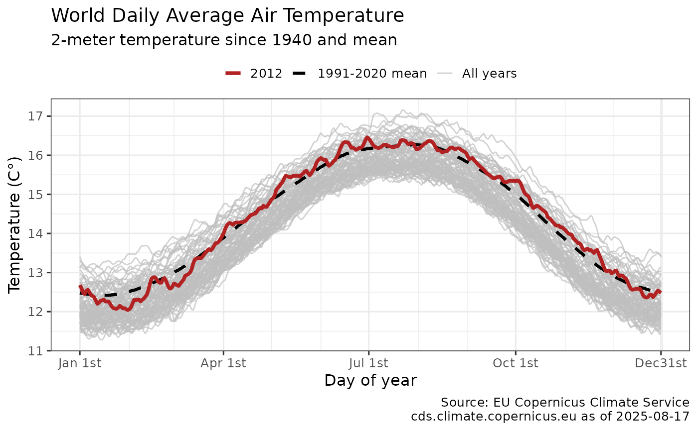
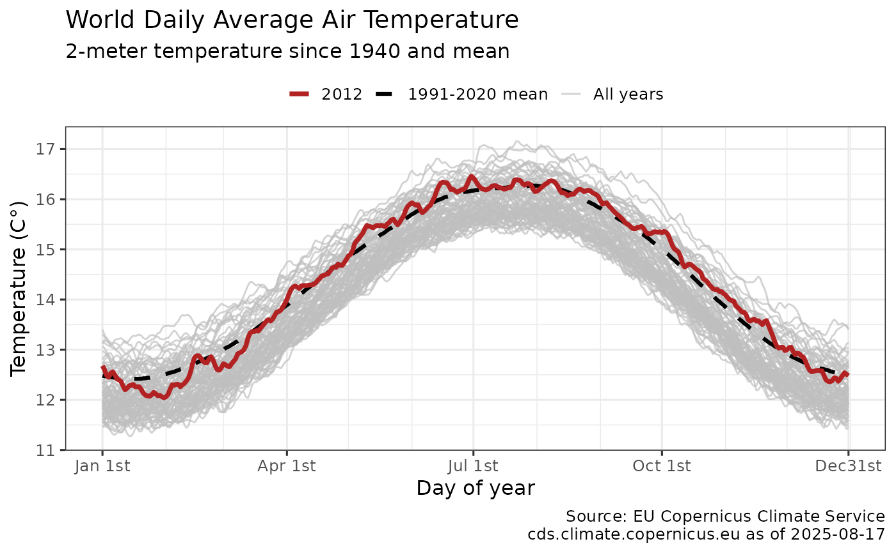

Plots the daily temperatures since 1940 and current anomaly data retrieved using get_dailytempcop() with ggplot2. The output ggplot2 object may be further modified.
Usage
plot_dailytemp(
dataset = get_dailytempcop(),
print = TRUE,
anomaly = FALSE,
maxtemp = FALSE,
current_year = as.numeric(substr(Sys.Date(), 1, 4)),
title_lab = "Daily Average Air Temperature",
cop = TRUE
)Arguments
- dataset
Name of the tibble generated by
get_dailytempcoporget_dailytemp(boolean) Display daily temperature ggplot2 chart, defaults to TRUE. Use FALSE to not display chart.
- anomaly
(boolean) Display current anomaly versus historic mean, defaults to TRUE.
- maxtemp
(boolean) Display current deviation versus historic max, defaults to FALSE.
- current_year
(numeric) Year to highlight in alternate color, defaults to current year.
- title_lab
(string) Title to override default chart title. Default title pulls region name from dataset attributes.
- cop
(boolean) Flag for chart caption, TRUE = Copernicus, FALSE =. ClimateReanalyzer.org
Details
plot_temp invisibly returns a ggplot2 object with a pre-defined daily temperature anomaly chart using data from get_dailytemp.
By default the chart is also displayed. Plots one line per year, as well as mean and anomaly (which may be disabled). Users may further modify the output ggplot2 chart.
Author
Hernando Cortina, hch@alum.mit.edu
Examples
# \donttest{
# Fetch temperature anomaly:
dailydata <- get_dailytempcop()
#
# Plot output using package's built-in ggplot2 defaults
plot_dailytemp(dailydata)
 # Don't plot anomaly shading and highight specific year
plot_dailytemp(anomaly = FALSE, current_year = 2012)

# Or just call plot_temp(), which defaults to get_dailytempcop() dataset
plot_dailytemp()
# Don't plot anomaly shading and highight specific year
plot_dailytemp(anomaly = FALSE, current_year = 2012)

# Or just call plot_temp(), which defaults to get_dailytempcop() dataset
plot_dailytemp()
 p <- plot_dailytemp(dailydata, print = FALSE)
# Modify plot such as: p + ggplot2::labs(title='Record Temperatures in 2023') # }
p <- plot_dailytemp(dailydata, print = FALSE)
# Modify plot such as: p + ggplot2::labs(title='Record Temperatures in 2023') # }